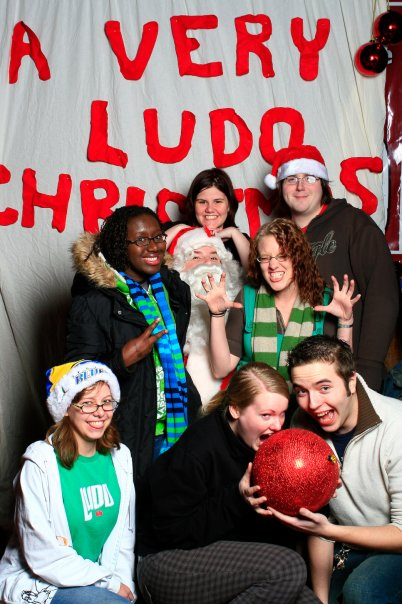
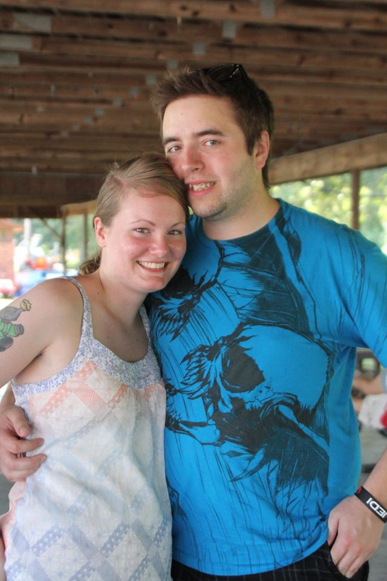
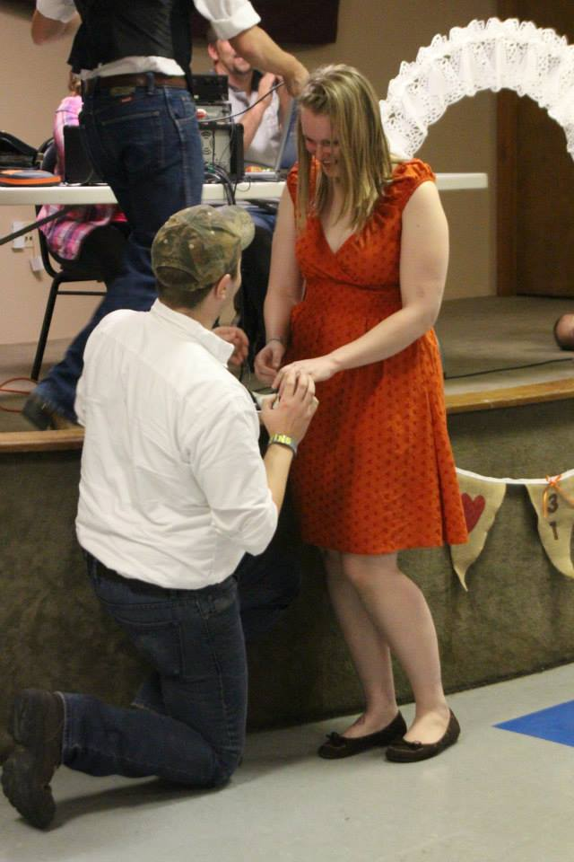
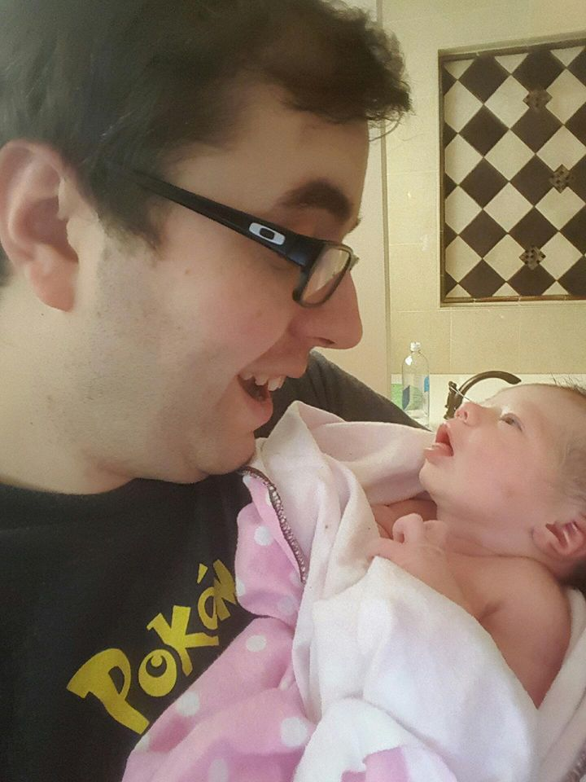
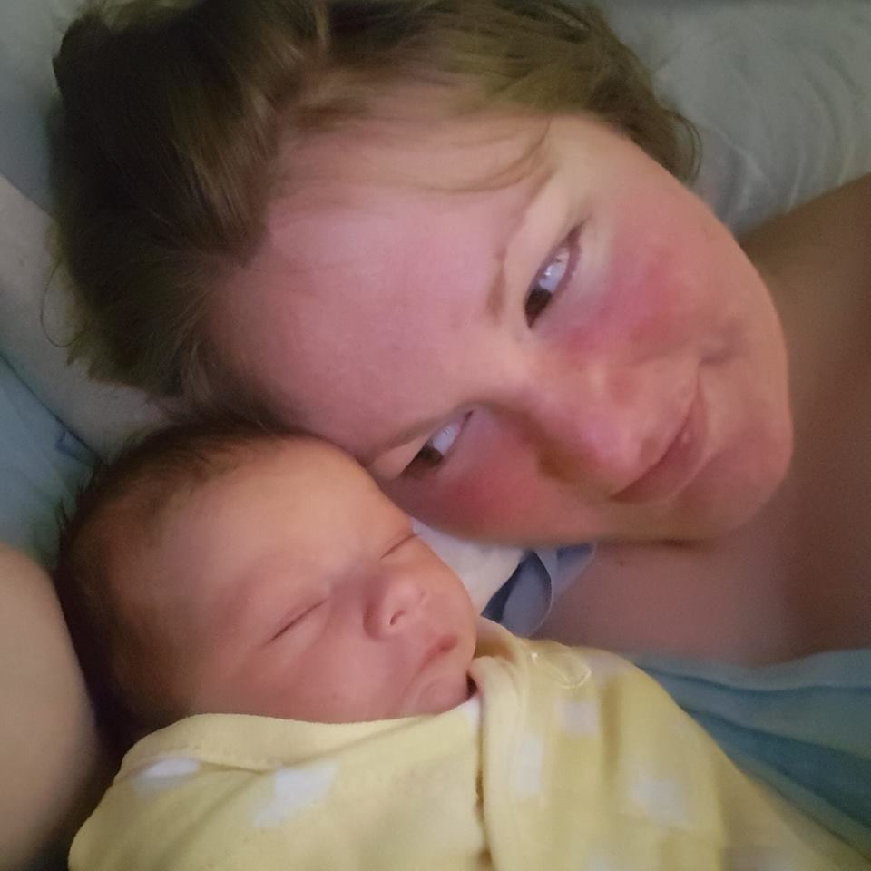
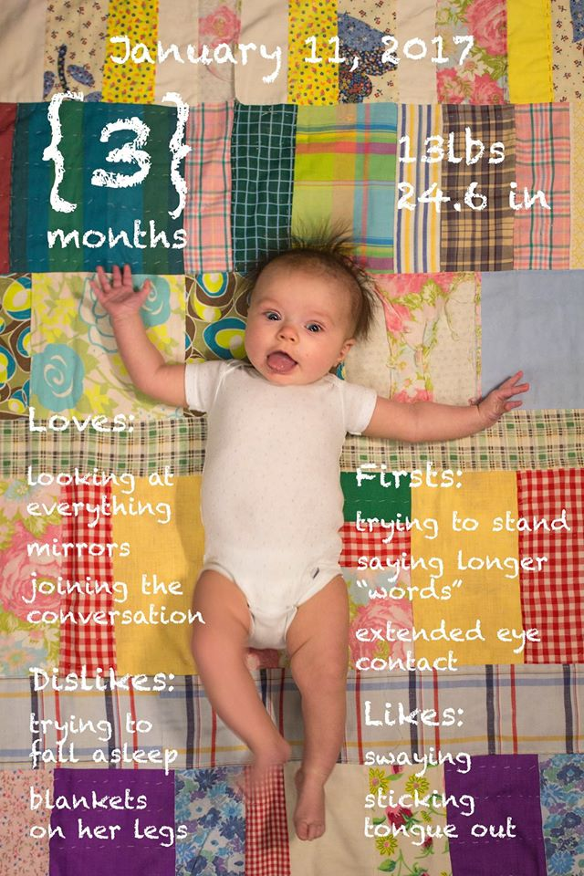
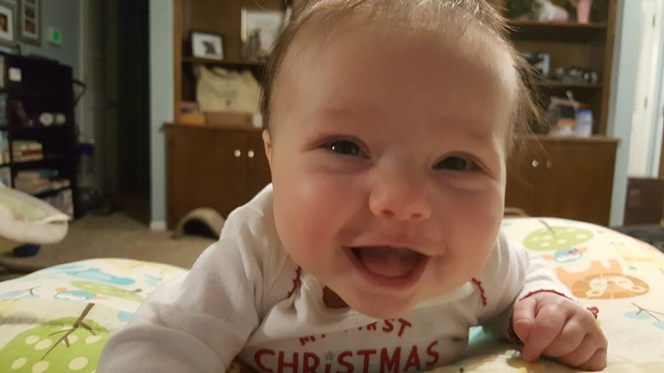

The Beginning
I met my wife at a Very Ludo Christmas Concert in 2008.We immediatly became fast friends and I always knew there was something more. She had decided to "friendzone" me due to us living on opposite sides of the state. We had moments that showed us that we had meant something more to each other over a course of 4 years. Our love for Ludo and My Little Pony kept us in consistent conversation until one fateful day in May 2012 that would change our futures.

Atlanta
Corey had gone on vacation to Florida with her Father and Brother. Her father had upset her by trying to drive tired and so when they stopped at the gas station she began walking. She got about 2 miles from the gas station when I received a phone call asking me if there was anyway I could come get her. Me being totally in love with this woman snap said yes. I called boss and asked for the next day off. I later recieved another phone call and Corey told me no to come get her because she got picked up and taken to her father and brother.
June and September
Corey's friends got married June 4th 2012. She attended the wedding and something came over her to drive down to see me, to see if we could work. We started dating on June 5th, 2012. We did the long distance thing for 2 and a half months when we decided that I would move up to Kansas City in September. So On September 2nd I packed up what little belongings I had and drove my way up to a new adventure with my new girlfriend.

Trials and Tribulations
Just like any other relationships we had our share of growing pains. Two relatively different individuals cohabitating for the first time. We have had dozens of fights, countless harsh words and we even broke up for a month. We had never lost sight on who we where and what we wanted, each other. Even though we had our share of ups and downs we also had a lot of awesome memories. We shared our love for Cosplay by dressing up as characters from My Little Pony. I proposed August 31st 2013 in front of my family and friends. We have gone to multiple concerts and the biggest accomplishment together is finding out that we where going to be parents.
Wedding and the arrival
Corey and I have always been a bit backwards when it comes to being normal and doing things within a normal progression. We always knew we would be married we just didn't really have any real reason to do it on a time frame. Well once we found out that Corey was pregnant we figured this was as good of a time as any and we got married on our anniversary June 5th 2016. Our wee little one joined us October 11th 2016 at 11am. Mara Quinn Cowsert finally graced us with her presence. She was everything that we wanted and more. The most adorable little girl that we had laid eyes on. I never knew I could feel so much love for someone I had just met.


The future
Now that is had been 3 months since our daughter was born I have discovered a new found ability to multitask. As I type this she is currently snoozing on my arms. She loves to have daddy time and I love my time with her. Who knows what the future hold, but I do know that I will always be there for this little girl for as long as she will have me. She is everything to me.

MOMMY AND I LOVE YOU MARA QUINN!
